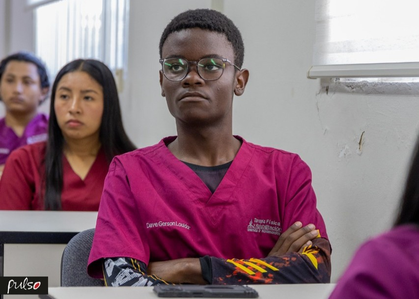

¿Porque Terapia Fisica y Rehabilitación

Desde niño, uno de mis sueños fue ser deportista profesional. Por distintas circunstancias y planes que no dependían de mí, ese sueño no se concretó. Cuando entendí que ese camino no seguiría adelante, consideré otras opciones como Teología y Comunicación y Medios. Lo que finalmente me llevó a elegir Fisioterapia fue saber que existe la posibilidad de especializarme en el área deportiva. Amo el deporte profundamente; es una parte esencial de quién soy. Estudiar Fisioterapia me permite seguir vinculado a ese mundo desde otra perspectiva, ayudando a otros atletas a recuperarse y rendir mejor. Si Dios lo permite, me gustaría especializarme en Fisioterapia Deportiva y dedicarme plenamente a esa área.